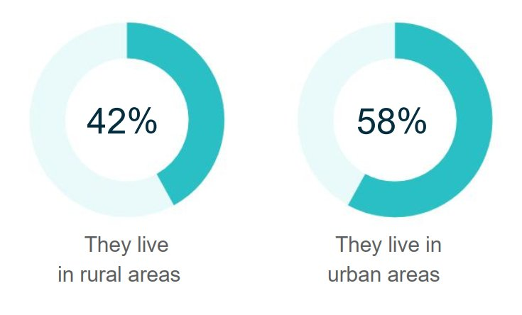
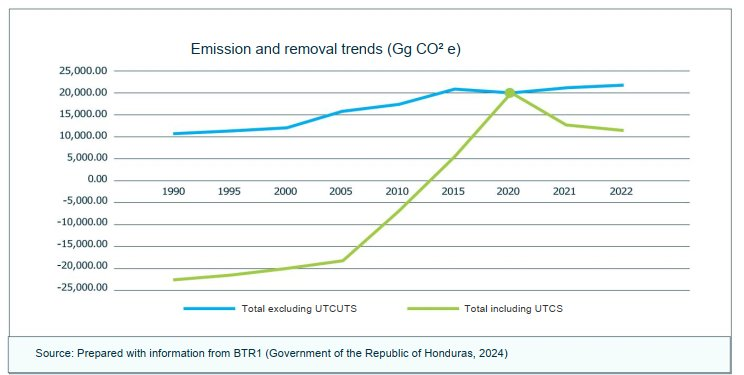
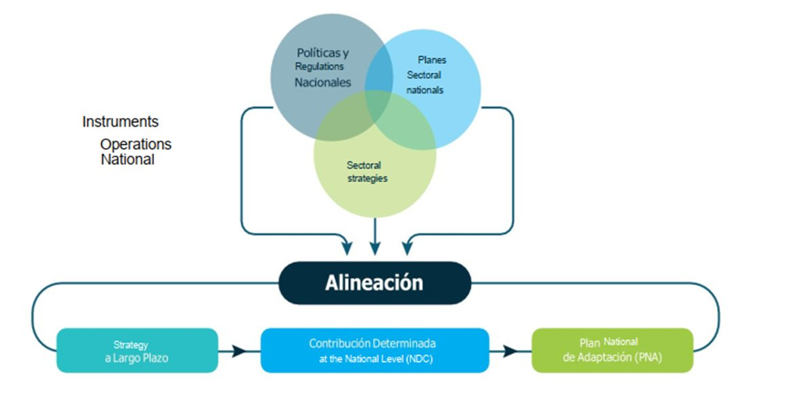
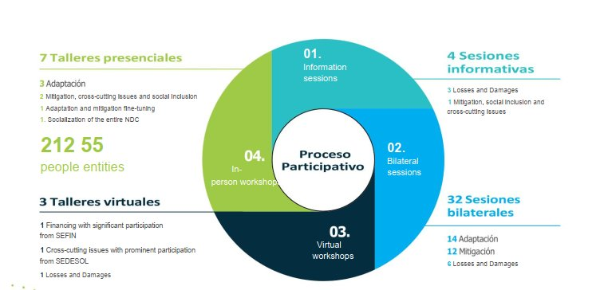
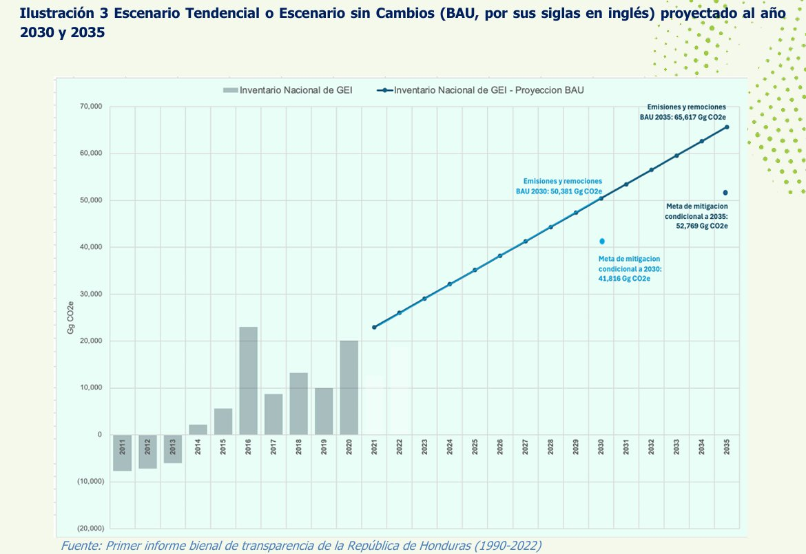
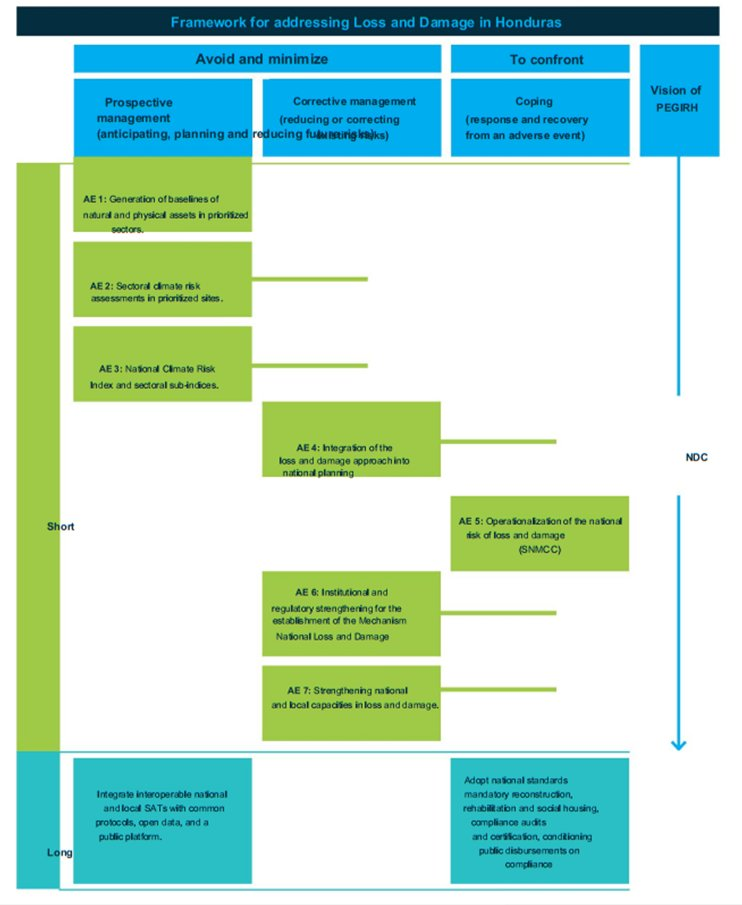
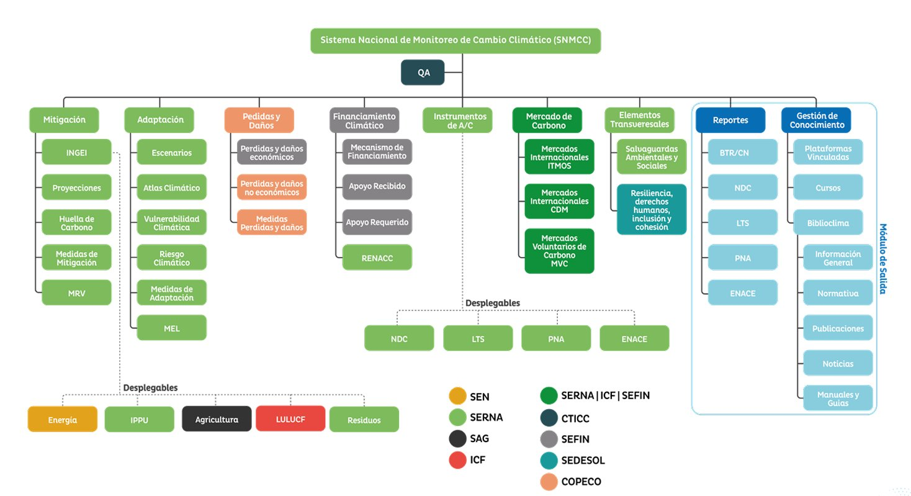

La República de Honduras, por medio de la Secretaría de Recursos Naturales y Ambiente (SERNA), reafirma su compromiso con la acción climática global mediante la presentación de esta Contribución Determinada a Nivel Nacional (NDC 3.0), en cumplimiento del Acuerdo de París y de la Convención Marco de las Naciones Unidas sobre el Cambio Climático (CMNUCC). Este documento refleja la voluntad del pueblo hondureño de contribuir activamente a la mitigación del cambio climático y a la adaptación frente a sus impactos, a pesar de ser uno de los países que menos contribuyen a las emisiones globales de gases de efecto invernadero.
Reconocemos que la lucha contra el cambio climático es una responsabilidad compartida, pero diferenciada. Por ello, instamos a los países desarrollados a cumplir con sus compromisos financieros y de transferencia de tecnología, tal como lo establecen la CMNUCC y el Acuerdo de París. El apoyo internacional es esencial para que países como Honduras puedan implementar sus NDC de manera efectiva y avanzar hacia un desarrollo sostenible y resiliente al clima.
Esta actualización incorpora todas las fuentes y los sumideros de gases de efecto invernadero conforme a las directrices metodológicas del Panel Intergubernamental sobre el Cambio Climático. Esta inclusión fortalece la integridad ambiental de nuestra NDC y permite una contabilización más precisa de nuestras emisiones y remociones. Además, integra un nuevo componente de pérdidas y daños y fortalece los componentes de mitigación y adaptación, así como los componentes transversales de financiamiento y de transparencia climática.
Honduras ha demostrado liderazgo en la implementación de los Artículos 5 y 6 del Acuerdo de París. Hemos cumplido con los requisitos del Artículo 5 al reportar voluntariamente nuestro Nivel de Referencia de Emisiones Forestales (FREL) y al incluir en nuestro Primer Informe Bienal de Transparencia los resultados de REDD+ correspondientes a los años 2021, 2022 y 2023.
Estos resultados ahora son elegibles para ser transaccionados como Resultados de Mitigación Transferidos Internacionalmente (ITMOs) bajo el Artículo 6 del Acuerdo de París. Además, estamos explorando cooperación con otros países para promover la implementación de estos artículos a nivel nacional, incluyendo el desarrollo de mecanismos innovadores para transacciones de carbono compatibles con las normas de la Organización de las Naciones Unidas (ONU) y la aplicación de ajustes correspondientes conforme a la orientación de la Conferencia de las Partes que actúa como reunión de las Partes del Acuerdo de París (CMA).
Agradecemos profundamente la asistencia técnica y financiera brindada por el Programa de las Naciones Unidas para el Desarrollo (PNUD) y su iniciativa Promesa Climática, Deutsche Gesellschaft für Internationale Zusammenarbeit (GIZ) a través del Proyecto NDC Partnership Readiness (NPR), The Pew Charitable Trusts, la Alianza de Bioversity International y el Centro Internacional de Agricultura Tropical (CIAT) y al NDC Partnership, cuyo apoyo ha sido fundamental en la elaboración de esta actualización.
De manera muy especial, reconocemos y agradecemos el apoyo incondicional, sostenido y estratégico de la Coalición de Países con Bosques Tropicales (CfRN), que ha acompañado a Honduras desde el año 2022. Su valiosa revisión del documento, asistencia técnica continua y acompañamiento cercano han sido determinantes para fortalecer nuestras capacidades institucionales y técnicas, y han hecho posible consolidar esta NDC, integrando de forma más robusta estrategias de conservación, manejo sostenible y restauración de los bosques. Este aporte ha sido esencial para reforzar la ambición de mitigación, la preservación de la biodiversidad y la resiliencia climática del país. Asimismo, el apoyo de la CfRN ha sido crucial y altamente efectivo para fortalecer la implementación del Artículo 5 y del Artículo 6 del Acuerdo de París, incluyendo los avances técnicos e institucionales necesarios para la consecución de resultados de mitigación transferidos internacionalmente (ITMOs) por parte de Honduras.
Agradecemos también a las 212 personas provenientes de 55 entidades de instituciones públicas, organizaciones de la sociedad civil, la academia y el sector empresarial, cuya participación fue fundamental para la construcción de la NDC 3.0. Este instrumento es el resultado de un proceso técnico, participativo, multiactor y multinivel. Reiteramos nuestro compromiso de continuar trabajando de manera colaborativa, tanto a nivel nacional como internacional, para enfrentar el desafío del cambio climático y construir un futuro más sostenible para las generaciones presentes y futuras.
S.E. Lucky Medina
Ministro
Secretaría de Recursos Naturales y Ambiente
Punto Focal Nacional ante la CMNUCC
La elaboración de la NDC 3.0 de Honduras fue coordinada por la Secretaría de Recursos Naturales y Ambiente, a través de la Dirección Nacional de Cambio Climático.
Iris Xiomara Castro Sarmiento
Presidenta de la República
Lucky Medina
Secretario de Estado en el despacho de Recursos Naturales y Ambiente
Jorge Salaverri
Subsecretario de Recursos Naturales
Wendy Rodríguez
Directora de la Dirección Nacional de Cambio Climático
Equipo Técnico de la Dirección Nacional de Cambio Climático
Para la elaboración de este documento se contó con el apoyo técnico y financiero del Programa de las Naciones Unidas para el Desarrollo (PNUD), la Cooperación Alemana al Desarrollo Deutsche Gesellschaft für Internationale Zusammenarbeit (GIZ), The Pew Charitable Trusts, la Alianza de Bioversity International y el Centro Internacional de Agricultura Tropical (CIAT), NDC Partnership, así como de la Coalición de Países con Bosques Tropicales, quienes apoyaron técnicamente en la definición de la meta UTCUTS e implementación del Artículo 6.
Climate Lead Group – Libélula
Agradecemos el acompañamiento técnico y la colaboración de todas las instituciones y equipos que contribuyeron al desarrollo de los contenidos de este documento.
SERNA 2026, Contribución Determinada a Nivel Nacional (NDC 3.0) de Honduras. Tegucigalpa, Honduras. 69 p.
| Sigla | Definición |
|---|---|
| BTR1 / IBT1 | Primer Informe Bienal de Transparencia, por sus siglas en inglés |
| CIAT | Centro Internacional de Agricultura Tropical |
| CMA | Conferencia de las Partes que actúa como reunión de las Partes del Acuerdo de París |
| CMNUCC | Convención Marco de las Naciones Unidas sobre el Cambio Climático |
| COPECO | Secretaría de Gestión de Riesgos y Contingencias Nacionales |
| CTICC | Comité Técnico Interinstitucional de Cambio Climático |
| DECA | Dirección General de Evaluación y Control Ambiental |
| ENACE | Estrategia Nacional de Empoderamiento Climático |
| FREL | Nivel de Referencia de Emisiones Forestales, FREL por sus siglas en inglés |
| GEI | Gases de Efecto Invernadero |
| GIZ | Deutsche Gesellschaft für Internationale Zusammenarbeit |
| ICF | Instituto Nacional de Conservación y Desarrollo Forestal, Áreas Protegidas y Vida Silvestre |
| INE | Instituto Nacional de Estadística |
| INGEI | Inventario Nacional de Gases de Efecto Invernadero |
| IPCC | Panel Intergubernamental sobre Cambio Climático, por sus siglas en inglés |
| ITMOs | Resultados de Mitigación Transferidos Internacionalmente |
| KIP | Plan de Implementación de Kigali, por sus siglas en inglés |
| MRV | Monitoreo, Reporte y Verificación |
| MTR | Marco de Transparencia Reforzado |
| NDC | Contribución Determinada a Nivel Nacional, por sus siglas en inglés |
| ONU | Organización de las Naciones Unidas |
| PAT | Plan de Acción Tecnológico |
| PEGIRH | Política de Estado para la Gestión Integral del Riesgo en Honduras |
| PIB | Producto Interno Bruto |
| PNA | Plan Nacional de Adaptación |
| PNUD | Programa de las Naciones Unidas para el Desarrollo |
| REDD+ | Reducción de Emisiones por Deforestación y Degradación de los bosques, por sus siglas en inglés |
| RENACC | Registro Nacional de Acciones de Cambio Climático |
| SAT | Sistema de Alerta Temprana |
| SEFIN | Secretaría de Finanzas |
| SERNA | Secretaría de Recursos Naturales y Ambiente |
| SIAFI | Sistema de Administración Financiera Integrada |
| SINAGER | Sistema Nacional de Gestión del Riesgo |
| SINEIA | Sistema Nacional de Evaluación de Impacto Ambiental |
| SMGPCH | Sistema de Monitoreo del Gasto Público para el Clima |
| SNMCC | Sistema Nacional de Monitoreo de Cambio Climático |
| SN-MRVT | Sistema Nacional de Medición, Reporte y Verificación para Transparencia |
| SNVS | Sistema Nacional de Vigilancia de la Salud |
| USD | Dólares estadounidenses |
| UTCUTS / LULUCF | Uso de la Tierra, Cambio de Uso de la Tierra y Silvicultura |
Honduras es un país de América Central, posee costas en el mar Caribe y el Océano Pacífico; su geografía se resalta por altas montañas, elevadas planicies y valles atravesados por diversos ríos (Gobierno de la República de Honduras, 2024).
Extensión territorial: 112,777 km² — conformado por 18 departamentos y 298 municipios (ICF & SERNA, 2024).
Su estructura de gobierno es democrática, republicana y representativa, conformada por tres poderes complementarios e independientes: el Poder Legislativo, el Poder Ejecutivo y el Poder Judicial. El Poder Ejecutivo está encabezado por el Presidente de la República, quien cuenta con el apoyo de un gabinete de secretarios de Estado. El Poder Legislativo es ejercido por un Congreso de Diputados, elegido mediante sufragio popular. Por su parte, el Poder Judicial está integrado por la Corte Suprema de Justicia, la Corte de Apelaciones y los juzgados establecidos por ley (Gobierno de la República de Honduras, 2024).
En 2024, la población fue de aproximadamente 9,898,279 habitantes, de los cuales el 42% habita en área rural y el 58% habita en área urbana.

Honduras representa el 0.06% de las emisiones globales de gases de efecto invernadero (Gobierno de la República de Honduras, 2024).
De acuerdo con el Primer Informe Bienal de Transparencia de la República de Honduras (BTR1) 1990–2022, las emisiones nacionales, excluyendo Uso de la Tierra, Cambio de Uso de la Tierra y Silvicultura (UTCUTS), sumaron 21,795 Gg de CO₂e en 2022.
En 2022, el sector Energía fue el mayor emisor, con 10,880 Gg CO₂e (50%), seguido de Agricultura, con 6,262 Gg CO₂e (29%), Residuos, con 2,566 Gg CO₂e (12%) y PIUP, con 2,087 Gg CO₂e (9%). Al incluir el balance de UTCUTS, que actuó como sumidero neto de −3,145 Gg de CO₂e, las emisiones totales del país fueron de 18,650 Gg de CO₂e (Banco Central de Honduras, 2022; Gobierno de la República de Honduras, 2024).

Fuente: Elaborado con información del BTR1 (Gobierno de la República de Honduras, 2024).
| Año | Agricultura [Gg CO₂e] | Energía [Gg CO₂e] | PIUP [Gg CO₂e] | Residuos [Gg CO₂e] | UTCUTS neto [Gg CO₂e] | INGEI [Gg CO₂e] |
|---|---|---|---|---|---|---|
| 1990 | 5,230.0 | 4,040.0 | 662.0 | 964.0 | (33,130.0) | 10,896.0 |
| 1991 | 5,160.0 | 4,180.0 | 667.0 | 979.0 | (33,050.0) | 10,986.0 |
| 1992 | 5,070.0 | 4,330.0 | 701.0 | 1,000.0 | (32,970.0) | 11,101.0 |
| 1993 | 4,540.0 | 4,490.0 | 776.0 | 1,030.0 | (32,880.0) | 10,836.0 |
| 1994 | 4,930.0 | 4,660.0 | 809.0 | 1,050.0 | (32,770.0) | 11,449.0 |
| 1995 | 4,620.0 | 4,840.0 | 829.0 | 10,800.0 | (32,650.0) | 21,089.0 |
| 1996 | 4,650.0 | 5,040.0 | 818.0 | 1,130.0 | (32,510.0) | 11,638.0 |
| 1997 | 4,540.0 | 5,240.0 | 875.0 | 1,180.0 | (32,350.0) | 11,835.0 |
| 1998 | 4,310.0 | 5,460.0 | 869.0 | 1,210.0 | (32,160.0) | 11,849.0 |
| 1999 | 3,860.0 | 5,680.0 | 949.0 | 1,230.0 | (31,950.0) | 11,719.0 |
| 2000 | 3,870.0 | 5,930.0 | 948.0 | 1,310.0 | (31,700.0) | 12,058.0 |
| 2001 | 4,000.0 | 6,180.0 | 977.0 | 1,370.0 | (31,410.0) | 12,527.0 |
| 2002 | 4,360.0 | 6,450.0 | 930.0 | 1,420.0 | (31,070.0) | 13,160.0 |
| 2003 | 5,080.0 | 6,740.0 | 960.0 | 1,440.0 | (30,680.0) | 14,220.0 |
| 2004 | 5,190.0 | 7,050.0 | 1,020.0 | 1,510.0 | (30,220.0) | 14,770.0 |
| 2005 | 5,340.0 | 7,900.0 | 1,030.0 | 1,540.0 | (33,620.0) | 15,810.0 |
| 2006 | 5,270.0 | 7,640.0 | 1,140.0 | 1,600.0 | (33,230.0) | 15,650.0 |
| 2007 | 5,400.0 | 9,370.0 | 1,180.0 | 1,650.0 | (31,160.0) | 17,600.0 |
| 2008 | 5,480.0 | 9,430.0 | 1,190.0 | 1,680.0 | (27,860.0) | 17,780.0 |
| 2009 | 5,680.0 | 8,670.0 | 1,170.0 | 1,720.0 | (29,170.0) | 17,240.0 |
| 2010 | 5,720.0 | 8,690.0 | 1,150.0 | 1,810.0 | (24,160.0) | 17,370.0 |
| 2011 | 5,827.8 | 9,327.2 | 1,198.7 | 1,903.1 | (25,915.1) | (7,658.4) |
| 2012 | 6,032.3 | 9,624.5 | 1,437.0 | 2,004.7 | (26,253.0) | (7,154.6) |
| 2013 | 6,160.1 | 9,637.0 | 1,144.5 | 2,063.1 | (24,991.6) | (5,986.9) |
| 2014 | 6,253.8 | 10,251.5 | 1,611.5 | 2,117.6 | (18,078.7) | 2,155.8 |
| 2015 | 6,275.2 | 10,883.3 | 1,566.0 | 2,168.9 | (15,289.3) | 5,604.1 |
| 2016 | 6,226.4 | 10,408.8 | 1,674.7 | 2,253.4 | 2,448.3 | 23,011.5 |
| 2017 | 6,262.3 | 9,052.7 | 1,765.0 | 2,347.5 | (10,693.7) | 8,733.8 |
| 2018 | 6,335.8 | 9,183.0 | 2,018.6 | 2,417.5 | (6,705.1) | 13,249.6 |
| 2019 | 6,336.9 | 9,824.9 | 2,192.3 | 2,464.6 | (10,895.0) | 9,923.6 |
| 2020 | 6,397.2 | 9,151.1 | 1,852.4 | 2,466.6 | 240.6 | 20,107.8 |
| 2021 | 6,386.9 | 10,290.9 | 1,994.7 | 2,524.6 | (8,545.9) | 12,651.2 |
| 2022 | 6,261.8 | 10,879.6 | 2,087.3 | 2,566.1 | (3,144.8) | 18,650.0 |
Fuente: Primer Informe Bienal de Transparencia de la República de Honduras (1990–2022). Nota: Los valores entre paréntesis indican remociones netas.
En las últimas décadas, Honduras ha experimentado pérdidas y daños devastadores causados por eventos climáticos extremos, lo que confirma su posición como uno de los países más afectados por el cambio climático.
La historia reciente evidencia una sucesión de desastres con efectos e impactos significativos en la población, la economía y el medio ambiente (SERNA, 2024).
Eventos como los ciclones tropicales Mitch, Eta e Iota, así como sequías prolongadas, tormentas tropicales, incendios e inundaciones han impactado de manera considerable al país.
Para el 2023 se estimaba que 3.2 millones de los habitantes residían en zonas altamente vulnerables, necesitando urgentemente de ayudas humanitarias por parte del gobierno (Naciones Unidas Honduras; Red Humanitaria de Honduras; Secretaría de Gestión de Riesgos y Contingencias Nacionales (COPE-CO), 2023).
Honduras reconoce que el cambio climático impacta de manera desproporcionada a la población en situación de pobreza, especialmente a las mujeres, los pueblos originarios y afrohondureños, quienes enfrentan menores niveles de resiliencia debido a desigualdades históricas y multidimensionales.
En el marco de coherencia y continuidad de la política climática nacional, el NDC 3.0 adopta como ancla metodológica y numérica para el periodo 2021–2030 la línea base y el escenario de referencia establecidos en la segunda actualización de NDC (abril 2025), construidos a partir de la serie histórica 2011–2020, con los datos reportados en su primer Informe Bienal de Transparencia (IBT) (Diciembre 2024), garantizando comparabilidad temporal y consistencia en el seguimiento. De conformidad con este marco, todas las metas sectoriales propuestas se consideran de carácter condicional, en tanto su logro depende de la movilización y acceso a financiamiento climático internacional que permita escalar medidas y niveles de mitigación, el cual se encuentra sujeto a definición y disponibilidad; por lo tanto, la ambición y el alcance de las metas podrán ajustarse en el futuro en función de la materialización de dicho apoyo.
Con el fin de ampliar el horizonte del NDC 3.0 hasta 2035, el tramo 2031–2035 se incorpora mediante una extensión metodológica posterior a 2030, construida como prolongación transparente de la trayectoria oficial, sin alterar los valores del periodo 2021–2030. En paralelo, y reconociendo avances diferenciados por sector, como lo es el sector de UTCUTS, este ya está en operación mediante la implementación de acciones en el marco del Artículo 5.2 (Enfoque REDD+ a nivel Nacional), la cual ha generado y reportado resultados.
Avances recientes (2021–2023) y se ha formalizado un primer enfoque cooperativo orientado a facilitar el acceso a financiamiento basado en resultados, el cual se desarrolla en el marco de la implementación del Artículo 6.2 del Acuerdo de París. Estos avances podrán contribuir a sustentar financieramente el fortalecimiento y eventual actualización de metas futuras, una vez se concrete la recepción del financiamiento acordado.
En consecuencia, para efectos de interpretación, coherencia y consistencia interna, toda referencia contenida en el NDC 3.0 a la Estrategia a Largo Plazo (LTS) deberá entenderse como una orientación programática sujeta a revisión y consulta continua en el contexto nacional, dado que la LTS se encuentra en proceso de consolidación. En este sentido, a partir del periodo posterior a 2035, la LTS se emplea exclusivamente como marco de orientación para el escalamiento de medidas y la planificación hacia 2050, sin sustituir, modificar ni reescribir los valores oficiales, líneas base, escenarios o metas contenidos dentro del horizonte del NDC 3.0. No obstante, las metas cuantitativas propuestas expresadas en números son los objetivos de compromiso de esta NDC.

Con la NDC 3.0, Honduras reafirma su compromiso, al más alto nivel, con la acción climática, en concordancia con el Acuerdo de París. El instrumento alinea la planificación, la ejecución y la rendición de cuentas con la CMNUCC y el Acuerdo de París, e instituye una arquitectura operativa para su seguimiento: se crea el SNMCC, que provee un MRV integral de emisiones y absorciones, avances en adaptación y flujos de apoyo (financieros, tecnológicos y de creación de capacidades). Este sistema se articula con el Inventario Nacional de Gases de Efecto Invernadero (INGEI), los BTR, las NDC, el PNA, la Estrategia Nacional de Empoderamiento Climático (ENACE), la estrategia de implementación del Artículo 5.2 y como visión orientadora en la LTS de Honduras en proceso de consolidación.
La NDC 3.0 integra componentes de mitigación, adaptación, pérdidas y daños, aspectos transversales, financiamiento y transparencia climática, bajo una lógica de desarrollo sostenible, reconociendo que la acción climática puede alinearse con el crecimiento económico, la competitividad, la innovación tecnológica, la atracción de inversión y el fortalecimiento de capacidades institucionales.
Esta NDC 3.0 considera los hallazgos del Primer Balance Mundial establecidos en la Decisión 1/CMA.5: aunque casi todos los países han iniciado acciones, los esfuerzos globales siguen siendo insuficientes para alcanzar las metas de largo plazo (UNFCCC, 2023). Limitar el calentamiento a 1.5 °C requiere reducir las emisiones globales de GEI en un 43% para 2030 y en un 60% para 2035 respecto de 2019, y lograr un CO₂ neto cero en 2050 (UNFCCC, 2024); el progreso actual no es suficiente.
Se resalta el alineamiento con el primer balance mundial mediante la Aceleración de la mitigación (antes de 2030). La NDC 3.0 establece cinco metas de mitigación y dieciséis medidas distribuidas en cinco sectores: Energía, PIUP, Agricultura, UTCUTS y Residuos, que abarcan todas las emisiones y los sumideros reportados en el INGEI. Las metas cuantitativas propuestas y expresadas numéricamente constituyen los objetivos de compromiso del país en materia de mitigación.
Reducción de las brechas en la adaptación. Se fortalecen las intervenciones, pasando de 9 metas y 14 medidas a 6 metas sectoriales y 26 medidas en los siguientes ejes estratégicos: agroalimentario y seguridad alimentaria; biodiversidad y servicios ecosistémicos; infraestructura y desarrollo socioeconómico; recursos hídricos; y salud y asistencia sanitaria.
Apoyo financiero reforzado. Se robustece el capítulo de financiamiento y, en etapas próximas, se establecerá el Plan de Implementación de la NDC 3.0, en el que se cuantificarán las necesidades financieras.
Con estas definiciones, la NDC 3.0 de Honduras no solo impulsa la reducción de emisiones, sino también la disminución de la vulnerabilidad mediante una mejor adaptación, una respuesta temprana y un enfoque de inclusión, a la vez que busca apalancar financiamiento internacional para acelerar la acción climática y avanzar hacia un desarrollo sostenible y resiliente al clima.
En este contexto, el Estado de Honduras establece que el cumplimiento de su NDC 3.0 está totalmente condicionado al acceso efectivo, suficiente y oportuno al financiamiento climático, así como al apoyo para la creación de capacidades y la transferencia de tecnología en el marco del Acuerdo de París. Reconocemos que la lucha contra el cambio climático es una responsabilidad común pero diferenciada; por ello, instamos a los países desarrollados a cumplir plenamente con sus compromisos financieros y de transferencia de tecnología, conforme a la CMNUCC y al Acuerdo de París.
La NDC 3.0 representa un avance significativo en la consolidación de un marco más institucional y técnico, alineado con los instrumentos climáticos nacionales. Este avance se sustenta en la NDC 2.0 original y, de manera especial, en la NDC 2.0 actualizada en materia de mitigación, la cual ha sido clave como punto de partida metodológico y numérico para la formulación, el seguimiento y la comparabilidad de las metas de la NDC 3.0. A partir de ese fundamento, la NDC 3.0 introduce un enfoque más estructurado y medible, con mayor apropiación interinstitucional.
Metas y medidas institucionalizadas: La NDC 3.0 valida e institucionaliza las metas y medidas climáticas, incorporando un plan de arreglos institucionales que formaliza los compromisos de los distintos actores.
Indicadores:1 Se desarrollan indicadores que permiten dar seguimiento y evaluar de forma sistemática y transparente el cumplimiento de los objetivos.
Alineación con instrumentos nacionales: La NDC 3.0 se articula con los principales instrumentos climáticos del país, como el PNA y las estrategias sectoriales, garantizando la coherencia en la acción climática. Asimismo, la NDC de Honduras está fuertemente articulada con la implementación del Artículo 5 y del Artículo 6 del Acuerdo de París principalmente del sector UTCUTS, incorporando estos enfoques dentro de las proyecciones ya establecidas en la NDC actualizada de abril de 2025.
Soporte técnico y metodológico: La nueva versión fortalece el respaldo técnico y metodológico de las metas y medidas, asegurando que cada compromiso se sustente en evidencia, análisis y herramientas adecuadas para su seguimiento y validación.
Pérdidas y daños: Nuevo componente de pérdidas y daños, que delinea acciones para evitar, minimizar y afrontar los efectos adversos del cambio climático.
Exhaustividad y consistencia: Honduras incluye emisiones y remociones de todos los sectores de su Inventario Nacional de Gases de Efecto Invernadero, siguiendo los lineamientos de las guías del IPCC.
La NDC 3.0 es el resultado de un proceso técnico, participativo, multiactor y multinivel. Entre julio de 2025 y octubre de 2025 se llevaron a cabo 7 talleres presenciales, 3 talleres virtuales, 4 sesiones informativas y 32 sesiones bilaterales, con la participación de 212 personas de 55 entidades de instituciones públicas, de la sociedad civil, de la academia y del sector empresarial. Los talleres presenciales incluyeron 3 de adaptación, 2 de mitigación, transversales e inclusión social, 1 de afinamiento de adaptación y mitigación, y 1 de socialización de toda la NDC.
Los talleres sectoriales abordaron financiamiento (con participación destacada de SEFIN), transversales (con participación destacada de SEDESOL) y pérdidas y daños; las sesiones informativas se distribuyeron en 3 de pérdidas y daños y 1 de mitigación, inclusión social y transversales; y las sesiones bilaterales comprendieron 14 de adaptación, 12 de mitigación y 6 de pérdidas y daños. Los insumos y opiniones permitieron fortalecer la elaboración del presente documento.

Para respaldar los compromisos de mitigación con evidencia sólida, Honduras ha fortalecido sus capacidades para estimar las emisiones y absorciones de GEI mediante la elaboración y publicación de su BTR1. Este informe constituye un hito en la consolidación de la información nacional sobre el cambio climático, lo que asegura el compromiso de Honduras con la transparencia, la rendición de cuentas y la acción climática efectiva.
La versión más actualizada del INGEI, incluida en el BTR1, abarca el periodo 1990–2022 y todos los sectores y gases clave: dióxido de carbono (CO₂), metano (CH₄), óxido nitroso (N₂O), hidrofluorocarbonos (HFC), perfluorocarbonos (PFC), hexafluoruro de azufre (SF₆) y trifluoruro de nitrógeno (NF₃). Las estimaciones fueron desarrolladas conforme a las Directrices 2006 del IPCC y utilizando los Potenciales de Calentamiento Global actualizados del Quinto Informe de Evaluación (AR5), en coherencia con los requisitos de la CMNUCC y el Acuerdo de París.
La información presentada en el BTR1 permite superar vacíos anteriores, especialmente en el sector UTCUTS, que ahora cuenta con datos más sólidos para el análisis. Esto significa que, a diferencia de ejercicios previos, Honduras ya integra al sector UTCUTS en sus compromisos de mitigación y en su trayectoria de reducción de emisiones.
Con esta mejora metodológica y la incorporación de información actualizada, y considerando la visión de la LTS de Honduras como insumo orientador, la NDC 3.0 de Honduras refleja una progresión real en términos de transparencia, claridad en las metas planteadas y robustez técnica.
En este marco, cobra especial relevancia la herramienta de Medición, Reporte y Verificación (MRV), también denominada NDC Tracking, elaborada por CfRN, la cual se adopta como herramienta principal para el seguimiento del cumplimiento de la NDC desde la perspectiva de resultados de mitigación, fortaleciendo la trazabilidad de avances, la consistencia del monitoreo y la rendición de cuentas.
Todo ello refuerza el compromiso del país con el principio de responsabilidades comunes pero diferenciadas y capacidades respectivas, a la luz de sus circunstancias nacionales.
Los sectores incluidos reflejan la estructura de emisiones del país y se alinean con los lineamientos del IPCC. La NDC 3.0 organiza sus medidas en cinco sectores principales, coherentes con la clasificación establecida por el IPCC:
En cada uno de estos sectores se definen medidas, acciones e indicadores que constituyen el marco de referencia para organizar y dar seguimiento al avance de Honduras en el cumplimiento de su NDC 3.0. Se establece un total de 16 medidas de mitigación, distribuidas entre los sectores mencionados.
La mitigación climática se concibe como una oportunidad de desarrollo sostenible para Honduras. Más allá de la reducción de emisiones, las medidas impulsarán la innovación, la competitividad, la generación de empleos verdes, la reducción de la pobreza y la cohesión social. Con el apoyo de la cooperación internacional y el fortalecimiento de las capacidades nacionales, Honduras trabajará por desacoplar el crecimiento económico del incremento de las emisiones, construyendo un futuro resiliente y de bajas emisiones.
Para este NDC 3.0, Honduras mantiene las metas establecidas en la segunda actualización de la NDC que buscan reducir en un 17% las emisiones proyectadas durante el periodo 2021–2030 (abril 2025), manteniendo la consistencia con la información presentada en su primer Reporte Inicial (diciembre 2025) bajo el Artículo 6 del Acuerdo de París.
Honduras se reservó el derecho de revisar su distribución de medidas de mitigación con base en las actualizaciones del inventario nacional de GEI y las revisiones y/o actualizaciones de las medidas de mitigación presentadas en el BTR1, así como el Nivel de Referencia de Emisiones Forestales de Honduras. Por lo tanto, en la segunda actualización, Honduras incluyó un nuevo Escenario Tendencial o Escenario sin Cambios (BAU) de 50,381.3 Gg CO₂e proyectado al año 2030.
Esta NDC 3.0, aunque mantiene las mismas metas ya establecidas, actualiza los valores de mitigación para todos los sectores con base en los datos presentados en su BTR. Estas metas reafirman y extienden los compromisos, contribuciones, planes y principios presentados en la primera actualización de la NDC.
Además, en esta NDC 3.0, Honduras amplía esta meta del 17% para el año 2035, aplicándola al escenario BAU de los mismos sectores. De esta manera, el país asegura una trayectoria de mitigación consistente entre 2030 y 2035, manteniendo el mismo nivel relativo de reducción respecto al escenario tendencial. Es decir, para 2035 se espera una reducción nacional de emisiones acumulada durante el periodo 2021–2035 de 19.6%, equivalente a 8,564.8 Gg CO₂e, incluyendo todos los sectores.
| Parámetro | Detalle |
|---|---|
| Periodo de implementación de la NDC 3.0 | 2021 al 2035 (15 años) |
| Tipo de meta | Meta de año único: 2035 |
| Periodo de referencia | 2011–2020 (BAU Actualizado) |
| Nivel de mitigación | Las emisiones se reducirán en 8,564.8 Gg CO₂e para el año 2030, y en 12,847.2 Gg CO₂e para el año 2035, condicionado a un financiamiento climático suficiente en el marco del Acuerdo de París. |
| Sectores incluidos | Energía, procesos industriales y uso de productos, agricultura, uso de la tierra, cambio en el uso de la tierra y silvicultura (UTCUTS) y residuos. |
| Gases incluidos | CO₂, CH₄, N₂O, HFCs y COVDM (compuestos orgánicos volátiles diferentes al metano). |
| Metodologías | Directrices del IPCC 2006 para los inventarios nacionales de GEI, así como el refinamiento en el 2019. Se utilizan los potenciales de calentamiento global incluidos en el quinto informe del IPCC (AR5). Para la proyección de BAU se utilizó una proyección lineal usando los valores GEI de cada sector del periodo de referencia. |
| Participación en el Artículo 6 del Acuerdo de París | Honduras está promoviendo activamente enfoques cooperativos para asegurar financiación climática que impulsen sus objetivos de desarrollo sostenible, garantizando al mismo tiempo los más altos estándares de integridad ambiental y contribuyendo a la mitigación global de emisiones. |
| Nivel esperado de emisiones y remociones (BAU) en el año 2030 | 2030: 50,381.3 Gg CO₂e. 2035: 65,616.6 Gg CO₂e. |
Nota: Los porcentajes aquí presentados son indicativos, ya que están condicionados a la disponibilidad de financiamiento climático para la implementación de las medidas de mitigación sectorial. Independiente de la distribución porcentual, Honduras espera mantener sus emisiones GEI totales debajo del BAU proyectado para 2030 y 2035.

Fuente: Primer Informe Bienal de Transparencia de la República de Honduras (1990–2022).
| Año | Agricultura Proyección BAU | Energía Proyección BAU | PIUP Proyección BAU | Residuos Proyección BAU | UTCUTS (emisiones) Proyección BAU | UTCUTS (remociones) Proyección BAU | UTCUTS (neto) Proyección BAU | INGEI Proyección BAU |
|---|---|---|---|---|---|---|---|---|
| 2011 | 5,828 | 9,327 | 1,199 | 1,903 | 10,905 | (36,821) | (25,915) | (7,658) |
| 2012 | 6,032 | 9,624 | 1,437 | 2,005 | 11,248 | (37,501) | (26,253) | (7,155) |
| 2013 | 6,160 | 9,637 | 1,145 | 2,063 | 11,333 | (36,324) | (24,992) | (5,987) |
| 2014 | 6,254 | 10,252 | 1,612 | 2,118 | 16,242 | (34,321) | (18,079) | 2,156 |
| 2015 | 6,275 | 10,883 | 1,566 | 2,169 | 16,353 | (31,642) | (15,289) | 5,604 |
| 2016 | 6,226 | 10,409 | 1,675 | 2,253 | 29,029 | (26,581) | 2,448 | 23,012 |
| 2017 | 6,262 | 9,053 | 1,765 | 2,348 | 21,213 | (31,907) | (10,694) | 8,734 |
| 2018 | 6,336 | 9,183 | 2,019 | 2,417 | 23,285 | (29,990) | (6,705) | 13,250 |
| 2019 | 6,337 | 9,825 | 2,192 | 2,465 | 20,737 | (31,632) | (10,895) | 9,924 |
| 2020 | 6,397 | 9,151 | 1,852 | 2,467 | 29,816 | (29,576) | 241 | 20,108 |
| 2021 (proy.) | 6,481 | 9,517 | 2,183 | 2,582 | 29,815 | (27,621) | 2,194 | 22,958 |
| 2022 (proy.) | 6,530 | 9,477 | 2,281 | 2,648 | 31,779 | (26,710) | 5,069 | 26,005 |
| 2023 (proy.) | 6,579 | 9,438 | 2,378 | 2,713 | 33,742 | (25,799) | 7,943 | 29,052 |
| 2024 (proy.) | 6,629 | 9,398 | 2,476 | 2,779 | 35,706 | (24,889) | 10,817 | 32,099 |
| 2025 (proy.) | 6,678 | 9,359 | 2,574 | 2,845 | 37,669 | (23,978) | 13,691 | 35,146 |
| 2026 (proy.) | 6,727 | 9,319 | 2,671 | 2,910 | 39,633 | (23,067) | 16,565 | 38,193 |
| 2027 (proy.) | 6,776 | 9,280 | 2,769 | 2,976 | 41,596 | (22,157) | 19,439 | 41,240 |
| 2028 (proy.) | 6,825 | 9,240 | 2,867 | 3,042 | 43,559 | (21,246) | 22,313 | 44,287 |
| 2029 (proy.) | 6,874 | 9,201 | 2,964 | 3,107 | 45,523 | (20,335) | 25,188 | 47,334 |
| 2030 (proy.) | 6,924 | 9,161 | 3,062 | 3,173 | 47,486 | (19,425) | 28,062 | 50,381 |
| 2031 (proy.) | 6,973 | 9,122 | 3,160 | 3,239 | 49,450 | (18,514) | 30,936 | 53,428 |
| 2032 (proy.) | 7,022 | 9,082 | 3,257 | 3,304 | 51,413 | (17,603) | 33,810 | 56,475 |
| 2033 (proy.) | 7,071 | 9,043 | 3,355 | 3,370 | 53,377 | (16,693) | 36,684 | 59,522 |
| 2034 (proy.) | 7,120 | 9,003 | 3,452 | 3,436 | 55,340 | (15,782) | 39,558 | 62,570 |
| 2035 (proy.) | 7,169 | 8,963 | 3,550 | 3,501 | 57,304 | (14,871) | 42,432 | 65,617 |
Fuente: Primer Informe Bienal de Transparencia de la República de Honduras (1990–2022). Nota: Los valores entre paréntesis indican remociones netas. Los valores en negrita indican las metas clave del BAU.
A continuación se presentan las medidas de mitigación para alcanzar las metas propuestas. Más detalles sobre las medidas se encuentran en las Fichas Anexas del documento Técnico de la NDC 3.0.
Medida 1 — Al 2030, incrementar la participación de las energías renovables hasta alcanzar el 70% de la matriz de generación eléctrica y mantenerla por encima de este nivel hacia 2035. Ampliar la participación de las fuentes renovables en la generación eléctrica con el fin de diversificar la matriz energética, reducir la dependencia de los combustibles fósiles y disminuir las emisiones de GEI, en coherencia con el Plan Indicativo de la Expansión de la Generación (PIEG) 2026–2035. Asimismo, se plantea promover la creación de condiciones habilitantes, entre ellas el desarrollo de sistemas de almacenamiento de energía y el fortalecimiento de la red de transmisión eléctrica.
Medida 2 — Al 2035, impulsar la eficiencia energética en los sectores de consumo. Impulsar la eficiencia energética en los sectores residencial, comercial e industrial, optimizando el uso de la energía y reduciendo la intensidad energética de la economía. Este objetivo se desarrollará mediante la electrificación de los usos finales, la sustitución de equipos e iluminación ineficientes, la aplicación de normas de desempeño energético y la promoción de edificaciones sostenibles y bioclimáticas. Se plantea que la intensidad eléctrica se reduzca, en términos absolutos, en 3.4 kWh/USD en 2030 y en 4 kWh/USD adicionales en 2035, respecto al 2022. Asimismo, se plantea incrementar la participación de la electricidad en el consumo final de energía en al menos 3 puntos porcentuales (p.p.) para el 2030 y en al menos 5 p.p. para el 2035.
Medida 3 — Al 2035, impulsar la bioenergía sostenible y moderna, priorizando el aprovechamiento del biogás, de los biocombustibles y de la biomasa proveniente de residuos o de plantaciones energéticas sostenibles. Impulsar el desarrollo de la bioenergía sostenible mediante biodigestores en fincas ganaderas y en plantas de tratamiento de aguas residuales, así como el diseño e implementación de estrategias nacionales orientadas a promover plantaciones energéticas y biocombustibles sostenibles. Se estima alcanzar, para el año 2030, una participación del 5% de los biocombustibles en el consumo final del sector transporte y mantener el porcentaje para 2035.
Medida 4 — Al 2030, reducir el consumo de leña por hogar en un 39% respecto al nivel de consumo registrado en 2012. Reducir el consumo de leña mediante la ampliación de programas de estufas mejoradas, priorizando a los hogares vulnerables y el manejo sostenible de la biomasa.
Medida 5 — Al 2030, fomentar la movilidad eléctrica en el país, alineada con la Estrategia Nacional de Movilidad Eléctrica de Honduras (ENME), y extender la ambición hacia 2035. Se espera alcanzar la electrificación del 3% del parque vehicular nacional para el 2030 y ampliar la ambición a 7.5% hacia el 2035.
Medida 6 — Al 2035, promover la hibridación progresiva de flotas de transporte privadas. Al 2035, se espera que el 20% de los vehículos livianos sean híbridos de gasolina y el 15% de los vehículos de carga pesada y liviana sean híbridos de diésel.
Medida 7 — Al 2030, impulsar planes de movilidad urbana sostenible. Impulsar la planificación y la operación adecuadas de sistemas de transporte público, de infraestructura peatonal y ciclista, y de medidas de gestión de la movilidad urbana, con el objetivo de reducir las emisiones, mejorar la calidad del aire en las ciudades y la salud de sus habitantes.
Medida 8 — Al 2035, reducir las emisiones generadas en los procesos de producción de cemento. Reducir las emisiones de CO₂ asociadas a la producción de cemento mediante la disminución del factor Clinker. Para 2030, se espera una reducción de 7.4 puntos porcentuales respecto a los valores reportados en el BTR y, para 2035, una disminución de 8.5 puntos porcentuales, respaldados mediante la promoción del uso de materiales alternativos y la actualización de las normas ambientales.
Medida 9 — Al 2035, disminuir el uso de gases fluorados en refrigeración y climatización, alineando las acciones con la Enmienda de Kigali y fomentando equipos tecnológicos eficientes avalados por el KIP. Disminuir gradualmente el uso de HFC en refrigeración y climatización hasta 2035, mediante el Plan de Implementación de Kigali. Específicamente, mantener el consumo de HFCs en un 90% para 2029 y en un 70% para 2035 respecto a la línea base del país, según la Enmienda de Kigali.
Medida 10 — Al 2035, transformar el sector ganadero hacia una economía baja en carbono, alineado con la NAMA Ganadería Honduras. Transformar el sector ganadero mediante la implementación de un modelo de ganadería sostenible que reduzca las emisiones entéricas, mejore la eficiencia productiva e incremente la captura de carbono en suelos y pasturas. Se estima implementar estas acciones en el 20% de las fincas del país. Asimismo, se estima una reducción de 2,100 Gg CO₂e acumulados al 2035.
Medida 11 — Al 2035, impulsar la producción de café baja en emisiones en Honduras. Impulsar prácticas de agroforestería, el uso eficiente de insumos y procesos de transformación con menor huella de carbono en la caficultura, alcanzando un total de 3,300 fincas para 2035. Se estima impulsar un manejo más eficiente de los fertilizantes nitrogenados en 3,300 fincas para 2035. En el ámbito del procesamiento, se espera implementar biodigestores, sistemas de compostaje y/o lagunas de oxidación en un total de 160 beneficios para 2035. Finalmente, se plantea sustituir progresivamente los secadores eléctricos o mecánicos por tecnologías solares, alcanzando 80 instalaciones modernizadas para 2035.
Medida 12 — Al 2035, promover agricultura baja en emisiones y con aumento de sumideros. Promover la adopción de tecnologías agrícolas eficientes, especialmente en cultivos prioritarios, que contribuyan a reducir las emisiones de GEI, aumentar los sumideros de carbono y mejorar la productividad y la sostenibilidad del sector agrícola. Entre las acciones impulsadas se incluye la reducción del uso de fertilizantes nitrogenados, proyectada a alcanzar un 12.7% del área dedicada a la agricultura para el año 2035, y la implementación de sistemas de riego eficientes, como el riego por goteo, en 20 mil hectáreas al 2035.
Medida 13 — Al 2030, reducir las emisiones netas del sector UTCUTS en un 1% respecto al BAU en 2030. Impulsar la reducción de las emisiones netas del sector UTCUTS mediante acciones de reforestación, restauración, protección y manejo forestal sostenible. La medida fomentará procesos coordinados de restauración y recuperación de bosques, movilizando recursos y fortaleciendo la gobernanza ambiental mediante la participación de las comunidades. Asimismo, se promoverán técnicas de restauración ecológica para recuperar o mejorar el régimen hídrico en áreas degradadas y se fortalecerá el estado fitosanitario de los bosques.
Medida 14 — Al 2030, disponer de un relleno sanitario operativo en Tegucigalpa con sistema de captura y al 2035 contar con aprovechamiento de biogás para generación de energía y reducción de emisiones. Fortalecer, a través de la Alcaldía Municipal del Distrito Central, la gestión integral de los residuos sólidos en Tegucigalpa mediante la construcción y operación de un relleno sanitario que incorporará sistemas de captura y aprovechamiento energético del biogás hacia el año 2035. El proyecto contará con una capacidad total de hasta 8 millones de toneladas de residuos sólidos, distribuida en una primera celda con capacidad de 3 millones de toneladas (vida útil de 10 años) y en una segunda celda con capacidad adicional de 5 millones de toneladas (proyección operativa de 15 años).
Medida 15 — Al 2030, fomentar la Gestión Integral de Residuos Sólidos, priorizando la reducción de la generación de residuos, el incremento del aprovechamiento de materiales valorizables y la implementación de soluciones tecnológicas sostenibles en los sitios de disposición final. Se establece como meta reducir en un 5% la generación anual per cápita de residuos sólidos no especiales a 2030, alcanzando una reducción del 10% a 2035 respecto a la línea base. Se espera elevar la tasa de aprovechamiento de residuos valorizables al 22% para el 2030 y al 30% para el 2035. Para el año 2030 existirán 3 sitios de disposición final con aprovechamiento de metano y 4 para 2035; y para 2035, aumentarán en 6 municipios adicionales los sitios de disposición final gestionados.
Medida 16 — Al 2030, fortalecer la Gestión Integral de Aguas Residuales. Fortalecer el cumplimiento de la normativa vigente relativa al tratamiento y la descarga de aguas residuales en cuerpos receptores y en sistemas de alcantarillado sanitario, con el fin de reducir la carga orgánica y las emisiones de metano y óxido nitroso asociadas al sector. Se plantea que para el año 2030, el 80% del total de las Plantas de Tratamiento de Aguas Residuales contará con un diagnóstico realizado por la Unidad de Control de Vertidos, alcanzando el 90% para 2035.
Desde la actualización de la NDC en 2021, Honduras ha registrado avances importantes en la construcción de marcos habilitantes y en el fortalecimiento de la acción climática. Entre estos destacan la Primera Comunicación de Adaptación; los hallazgos del Primer Informe Bienal de Transparencia (BTR1); el informe de Revisión y Progreso del PNA, para el periodo 2018–2023; dicho PNA se encuentra en proceso de actualización para el ciclo 2025–2030. Estos instrumentos identifican las brechas y las recomendaciones clave para orientar la formulación de la NDC 3.0.
A pesar de estos avances, el país continúa enfrentando presiones crecientes sobre sus recursos hídricos, sistemas productivos, ecosistemas, infraestructura y salud humana. La gobernanza del agua sigue limitada por la falta de una autoridad operativa, por sistemas de monitoreo fragmentados y por la ausencia de instrumentos normativos fundamentales, mientras la degradación de zonas de recarga y la contaminación de fuentes superficiales y subterráneas comprometen la seguridad hídrica. La producción agroalimentaria también es altamente vulnerable a la variabilidad climática, las sequías, la degradación de suelos y las plagas, con brechas persistentes en asistencia técnica, financiamiento e infraestructura productiva, especialmente en cadenas como las de granos básicos, de café y de ganadería. De manera paralela, la pérdida de bosques, la degradación de hábitats marino-costeros y la presión sobre áreas protegidas debilitan los servicios ecosistémicos esenciales. Estas vulnerabilidades se amplifican por la exposición crítica de la infraestructura vial, energética y de agua y saneamiento a huracanes, inundaciones, deslizamientos y olas de calor. El sector salud también enfrenta impactos crecientes, evidenciados por el aumento de enfermedades sensibles al clima y por limitaciones estructurales en la vigilancia epidemiológica, la infraestructura sanitaria y la capacidad operativa, especialmente en zonas rurales y costeras.
Esta combinación de factores subraya la necesidad urgente de fortalecer los marcos habilitantes, las capacidades institucionales y los sistemas de información robustos para sustentar la acción climática y avanzar hacia un desarrollo más resiliente.
La actualización de la NDC 3.0 se fundamenta en los cinco ejes estratégicos del PNA:
En este marco, la NDC 3.0 eleva sustancialmente la ambición en adaptación al incluir acciones dirigidas a enfrentar desafíos estructurales en la gestión del agua, la resiliencia de los sistemas agroalimentarios, la conservación de ecosistemas, la protección de la infraestructura crítica, la adaptación del sistema energético y el fortalecimiento del sector salud.
A continuación se presentan las medidas de adaptación necesarias para alcanzar la meta propuesta en cada eje estratégico. Más detalles sobre las medidas se encuentran en las Fichas Anexas del documento Técnico de la NDC 3.0.
Meta: Para 2035, el país habrá fortalecido la producción agroalimentaria resiliente al clima, aumentando la seguridad alimentaria y los medios de vida, mediante la capacitación y la adopción de prácticas sostenibles, la promoción de la innovación tecnológica y el fortalecimiento de los servicios climáticos del sector.
Medida 1 — Para 2030, fortalecer las capacidades de los actores de las cadenas agroalimentarias, mediante las acciones impulsadas por las Mesas Agroclimáticas Participativas (MAPs) existentes. Fortalecer las capacidades mediante la difusión de información agroclimática (boletines), la capacitación y la asistencia técnica, promoviendo la agricultura adaptada al clima. La medida incluye el fortalecimiento de las MAPs existentes y la creación de nuevas MAPs en regiones y comunidades donde aún no operan.
Medida 2 — Para 2035, reforzar los sistemas de alerta temprana (SAT) agroclimáticos e instalar y operativizar al menos uno nuevo, apoyando la toma de decisiones efectiva e informada. Reforzar los SAT agroclimáticos (papa, frijol y fresa) mediante el fortalecimiento de las redes de observación climática y la instalación y operativización de al menos un nuevo sistema de cultivo priorizado, con umbrales de alerta para amenazas como sequías e inundaciones.
Medida 3 — Para el 2035, impulsar la investigación y la transferencia de tecnologías agrícolas mediante nuevas variedades de granos básicos mejoradas, liberadas anualmente. Entiéndase como nuevas tecnologías la modificación de las semillas mejoradas y biofortificadas, considerando las condiciones de suelo y clima, adaptadas a los territorios. La medida se implementará a través de las Estaciones Experimentales de DICTA-SAG, con el apoyo de universidades, organizaciones de cooperación y ONG.
Medida 4 — Al 2035, fortalecer las capacidades técnicas de los actores de la cadena de café, con un enfoque en resiliencia climática, alcanzando al menos al 50% de los productores cafetaleros activos. Fortalecer las capacidades técnicas mediante programas de capacitación y asistencia técnica que impulsen la adopción de prácticas sostenibles como la agroforestería, la conservación de suelos, el uso eficiente del agua, la gestión adecuada de residuos y las buenas prácticas postcosecha.
Medida 5 — Para 2035, fomentar la implementación de prácticas de ganadería sostenible para fortalecer la resiliencia de los sistemas productivos ganaderos frente a los impactos del cambio climático. Fomentar la implementación mediante asistencia técnica y capacitación especializada, impulsando la adopción de sistemas silvopastoriles, la cosecha de agua, los bancos forrajeros y la rotación de pasturas como medidas clave de adaptación.
Meta: Para 2035, Honduras habrá fortalecido la gestión integral de los ecosistemas terrestres, mediante la conservación, restauración y ampliación de las áreas de conservación, propiciando la conectividad ecológica, la resiliencia frente al cambio climático y el mantenimiento de los servicios ecosistémicos para el bienestar humano y el desarrollo sostenible.
Medida 6 — Para 2035, incrementar en un 2% la superficie terrestre nacional bajo esquemas oficiales de conservación mediante la creación, declaratoria o reconocimiento de nuevas áreas de conservación, tales como áreas protegidas, reservas naturales privadas, microcuencas y sitios de importancia para la vida silvestre.
Medida 7 — Para 2035, reducir en un 70% la pérdida neta de cobertura forestal en las áreas de conservación para fortalecer su integridad ecológica, mediante la implementación articulada de las estrategias nacionales forestales. Reducir la pérdida neta de cobertura forestal mediante la implementación articulada de la Estrategia Nacional de Restauración Forestal y de la Estrategia Cero Deforestación, priorizando acciones de conservación, protección y manejo sostenible de los bosques.
Meta: Para 2035, el país habrá fortalecido la gestión sostenible y resiliente de los ecosistemas marino-costeros mediante la coordinación interinstitucional, la ampliación de las áreas de conservación y la implementación de acciones integradas de monitoreo, conservación, restauración y protección frente a los impactos del cambio climático.
Medida 8 — Para 2035, incrementar en un 5% la superficie marino-costera nacional bajo esquemas oficiales de conservación, con el fin de fortalecer la resiliencia de los ecosistemas y las comunidades. Incrementar la superficie marino-costera mediante la ampliación y creación de áreas protegidas en zonas de alta biodiversidad y valor ecosistémico, promoviendo mecanismos de protección complementarios como reservas comunitarias, áreas de manejo y esquemas de protección temporal.
Medida 9 — Para el 2030, fortalecer el sistema de monitoreo del estado de salud de los ecosistemas arrecifales, lo que permita la gestión sostenible y resiliente de los arrecifes coralinos. Fortalecer el sistema de monitoreo mediante la integración y sistematización de la información generada por instituciones gubernamentales, cooperantes, ONGs comanejadoras y otros actores que realizan estudios y monitoreos, estandarizando criterios y mejorando el acceso a los datos.
Medida 10 — Para 2035, implementar acciones de restauración de arrecifes de coral en sitios prioritarios, contribuyendo a la recuperación de la cobertura coralina y la protección de la biodiversidad marino-costera. Implementar acciones mediante el monitoreo continuo de los ecosistemas arrecifales y la gestión integral de los arrecifes (viveros, restauración ex-situ, investigación), priorizando áreas críticas para la biodiversidad y la incorporación de nuevas áreas al SINAPH.
Medida 11 — Para el 2035, generar una línea base de la cobertura de los pastos marinos de Honduras, para identificar áreas vulnerables y zonas de riesgo, lo que permita la toma de decisiones efectiva e informada. Generar una línea base nacional que permita monitorear su estado de conservación, estimar su extensión actual y priorizar sitios para restauración y conservación.
Medida 12 — Para 2035, realizar acciones para restaurar al menos el 10% de los manglares en zonas viables para la restauración. Realizar acciones para la restauración de los manglares en zonas viables de intervención, mediante la implementación de mecanismos de restauración ecológica, realizando visitas de campo para su validación, monitoreo y análisis.
Medida 13 — Al 2035, impulsar acciones para mantener o mejorar la integridad ecológica de las áreas de conservación que abarcan humedales, en al menos un 65%. Impulsar acciones para mantener o mejorar la integridad ecológica de los humedales ubicados en las áreas de conservación, mediante el monitoreo continuo, la restauración ecológica y la protección de estos ecosistemas.
Meta: Para el 2035, Honduras habrá incorporado en sus instrumentos estratégicos de planificación el enfoque de adaptación al cambio climático para aumentar la resiliencia de los sectores de infraestructura, energía y turismo y fortalecer la planificación territorial, promoviendo el desarrollo sostenible.
Medida 14 — Para 2030, elaborar y aprobar una normativa técnica que incorpore criterios de resiliencia climática en el diseño, la ejecución y el mantenimiento de la infraestructura vial. La normativa técnica permitirá incorporar criterios de resiliencia climática en el diseño, la construcción, el mantenimiento y la mejora de las infraestructuras viales, tanto nuevas como existentes, garantizando que estas sean resilientes y acordes con las condiciones climáticas actuales y futuras.
Medida 15 — Para el 2030, elaborar y aprobar la normativa nacional para el diseño, la construcción y el mantenimiento de los servicios de agua potable y saneamiento, con enfoque en la resiliencia climática. La normativa establecerá criterios técnicos y medidas de adaptación aplicables en las etapas de planificación, diseño, construcción, mantenimiento y mejoras de las obras del sector (nuevas y existentes), con el propósito de garantizar la continuidad y la seguridad del servicio de agua frente a las condiciones climáticas presentes y futuras.
Medida 16 — Para el 2030, incorporar el enfoque de adaptación al cambio climático en las metodologías para la elaboración de los instrumentos de desarrollo y de ordenamiento municipales. Esta medida busca fortalecer la planificación territorial y promover el desarrollo urbano y rural resiliente y sostenible mediante metodologías que incorporen el enfoque de adaptación en la elaboración de los Planes Municipales de Ordenamiento Territorial (PMOT), los Planes de Desarrollo Municipal (PDM) y los Planes de Desarrollo Urbano Municipal (PDUM).
Medida 17 — Para 2035, elaborar y aprobar una estrategia de adaptación para los sistemas de generación, transmisión y distribución del subsector eléctrico. Elaborar y aprobar una estrategia de adaptación orientada a reducir la vulnerabilidad y fortalecer la resiliencia de la infraestructura energética frente a los impactos del cambio climático. La estrategia integrará criterios de adaptación y de gestión del riesgo climático en el diseño, la operación y el mantenimiento de las instalaciones para garantizar la seguridad, la continuidad y la sostenibilidad del suministro eléctrico.
Medida 18 — Para 2035, elaborar al menos cinco planes de desarrollo turístico para destinos priorizados que incorporen el enfoque del cambio climático. Elaborar planes de desarrollo turístico en destinos priorizados que incorporen el enfoque del cambio climático, con el objetivo de fortalecer la planificación y la gestión sostenibles del sector turístico, promoviendo un modelo de turismo sostenible, seguro y competitivo.
Meta: Para 2035, Honduras habrá fortalecido la gobernanza, la gestión sostenible y la resiliencia de sus recursos hídricos mediante instrumentos de planificación efectivos, acciones estratégicas adaptadas y la toma de decisiones basada en datos científicos actualizados.
Medida 19 — Para el 2026, aprobar la Política Nacional de Gestión Integral de los Recursos Hídricos, que incorpore el enfoque de adaptación al cambio climático. Aprobar la PNGIRH como instrumento rector para fortalecer la gobernanza, la coordinación interinstitucional y la gestión sostenible del recurso hídrico a nivel nacional.
Medida 20 — Para el 2035, reforzar la gobernanza hídrica mediante la formulación y actualización de instrumentos de planificación hídrica para la adaptación al cambio climático. Esta medida busca armonizar y estandarizar los criterios técnicos y metodológicos entre los distintos instrumentos de planificación, fortaleciendo la coordinación institucional y las sinergias entre las plataformas de gobernanza del sector hídrico.
Medida 21 — Para el 2035, fortalecer la gestión integral de las zonas de recarga hídrica mediante acciones estratégicas. Fortalecer la gestión integral de las zonas de recarga hídrica, en particular en cuencas críticas como el Corredor Seco, el Valle de Sula y las zonas urbanas con alta presión hídrica, mediante la implementación de acciones estratégicas (reforestación, restauración y vigilancia comunitaria).
Medida 22 — Para el 2030, ampliar la base de datos nacional para el registro, monitoreo y control de pozos en zonas con estrés hídrico, orientada a apoyar la gestión adaptativa y sostenible de los recursos hídricos subterráneos. Esta medida permitirá mejorar el conocimiento sobre la ubicación, el estado y la calidad del agua de los pozos existentes, facilitando la toma de decisiones informada y la planificación de acciones de conservación.
Medida 23 — Para el 2035, impulsar la investigación científica y aplicada sobre la calidad del agua, considerando parámetros sensibles al clima y su impacto en la gestión de riesgos hídricos. Promover la colaboración entre instituciones gubernamentales, la academia y organizaciones especializadas para analizar los efectos del cambio climático sobre los recursos hídricos, incorporando parámetros microbiológicos, fisicoquímicos, nutrientes y metales pesados, así como nuevos indicadores vinculados al cambio climático (clorofila a, microplásticos, acidificación).
Medida 24 — Para el 2035, fortalecer la Red Meteorológica Nacional mediante la ampliación, mantenimiento y rehabilitación de las estaciones. Fortalecer la Red Meteorológica Nacional para la toma de decisiones basada en información confiable, mediante la ampliación, el mantenimiento y rehabilitación de las estaciones meteorológicas e hidrometeorológicas, mejorando la calidad de los datos y la interconexión de sistemas entre entidades públicas y privadas.
Meta: A 2035, Honduras habrá impulsado acciones para aumentar la resiliencia del Sector Salud, incorporando la adaptación al cambio climático en los instrumentos estratégicos y fortaleciendo el sistema de monitoreo y prevención de enfermedades sensibles al clima.
Medida 25 — Para 2030, actualizar y aprobar la Estrategia de Adaptación al Cambio Climático del Sector Salud. Actualizar y aprobar la Estrategia de Adaptación al Cambio Climático del Sector Salud, incorporando nuevos enfoques, prioridades y acciones orientadas a fortalecer la resiliencia del sistema de salud frente a los impactos del cambio climático. Esta estrategia incorpora elementos como la gestión de recursos, la mejora de la infraestructura sanitaria, la formación del personal de salud y la planificación de acciones preventivas y de respuesta.
Medida 26 — Para 2035, fortalecer el Sistema Nacional de Vigilancia de la Salud (SNVS) mediante la incorporación del módulo de enfermedades sensibles al clima, a fin de implementar acciones de control efectivas. Fortalecer el SNVS mediante la incorporación de un módulo sobre enfermedades sensibles al clima, que permita monitorear, analizar y responder oportunamente a los efectos del cambio climático sobre la salud pública, mejorando la vigilancia epidemiológica y priorizando acciones preventivas y de control.
Honduras se encuentra entre los países más vulnerables al cambio climático a nivel global, con eventos hidrometeorológicos que han generado pérdidas y daños recurrentes en los sectores productivos, sociales y ambientales. De acuerdo con el BTR, las inundaciones representan cerca del 48.5% de las pérdidas históricas y las sequías el 34.1%, concentrando más del 80% de las pérdidas económicas totales (SERNA, 2024). Los ciclones tropicales Mitch (1998), Eta e Iota (2020) provocaron daños significativos en infraestructura, vivienda, agricultura y servicios básicos, afectando al 40% de la población (SERNA, 2024).
El país ha avanzado en la institucionalización de la gestión del riesgo mediante la Política de Estado para la Gestión Integral del Riesgo en Honduras (PEGIRH, 2013), la Ley del Sistema Nacional de Gestión del Riesgo (SINAGER, 2009) y el borrador de la Ley de Cambio Climático (2025). Asimismo, dentro de las prioridades de Honduras destaca la creación del Mecanismo Nacional de Pérdidas y Daños, en alineamiento con el Mecanismo internacional de Varsovia (WIM), de conformidad con lo establecido en el Artículo 8 del Acuerdo de París.
Meta: Para el año 2035, Honduras habrá establecido las bases institucionales, técnicas y financieras para un Mecanismo Nacional de Pérdidas y Daños operativo, fortaleciendo sus capacidades para comprender, actuar, apoyar y acceder a financiamiento con el fin de evitar, minimizar y afrontar las pérdidas y daños económicos y no económicos asociados con los efectos adversos del cambio climático, tanto por eventos de evolución lenta como por eventos meteorológicos extremos.

Las siete acciones estratégicas se organizan conforme a los tres enfoques de la Política de Estado para la Gestión Integral del Riesgo de Honduras (PEGIRH): gestión prospectiva, gestión correctiva y gestión compensatoria (SINAGER & COPECO, 2013) y en alineación con la Estrategia a Largo Plazo de Desarrollo con Bajas Emisiones y Resiliencia Climática (LTS) y con el Primer Informe Bienal de Transparencia.
Acción Estratégica 1 — Generación de líneas base de activos naturales y físicos en sectores priorizados. Establecer líneas base nacionales sobre la exposición y la vulnerabilidad de los activos naturales y físicos en los sectores prioritarios, tales como infraestructura (agua y saneamiento, energía, transporte), social (educación, salud, vivienda), productivo (industria, comercio, agricultura, ganadería, turismo), y ambiente, considerando grupos vulnerables. Estas líneas base constituirán el inventario inicial y el diagnóstico de los activos y servicios expuestos a los impactos del cambio climático.
Acción Estratégica 2 — Evaluación del riesgo climático sectorial en sitios priorizados. Realizar evaluaciones integrales de riesgo climático para los sectores y sitios priorizados, utilizando escenarios climáticos y socioeconómicos. Estas incorporarán proyecciones de cambio climático, la actualización y elaboración de mapas de amenaza (incluidas inundaciones, deslizamientos y el aumento del nivel del mar) en coordinación con COPECO, así como la construcción de escenarios específicos de amenaza, exposición y vulnerabilidad en sitios piloto.
Acción Estratégica 3 — Definición del Índice Nacional de Riesgo Climático y subíndices sectoriales. Desarrollar un Índice Nacional de Riesgo Climático de Honduras que integre objetivamente los factores de amenaza, vulnerabilidad y exposición a nivel nacional, y que se convierta en una herramienta estandarizada para priorizar acciones. La acción prevé la compilación y el procesamiento de indicadores cuantitativos que permitan comparar el riesgo relativo entre regiones y poblaciones del país, así como la elaboración de índices sectoriales de riesgo climático con mayor detalle.
Acción Estratégica 4 — Integración del abordaje de pérdidas y daños en la planificación nacional. Incorporar las acciones para afrontar pérdidas y daños (económicos y no económicos) entre los principales instrumentos de planificación nacional, avanzando hacia metodologías comunes para su identificación, cuantificación y valoración, así como la inclusión de medidas prioritarias en políticas, estrategias, planes y programas sectoriales.
Acción Estratégica 5 — Operativización del registro nacional de pérdidas y daños (SNMCC). Operativizar el módulo de pérdidas y daños del SNMCC para la cuantificación y el registro sistemático de la información a nivel sectorial, avanzando en metodologías homogéneas de cuantificación y en protocolos estandarizados de reporte. Se prevé el desarrollo de una plataforma interoperable para el registro nacional de pérdidas y daños, integrada al SNMCC y capaz de recopilar datos económicos y no económicos desagregados por tipo de evento, sector, región y población afectada.
Acción Estratégica 6 — Fortalecimiento institucional y normativo para el Mecanismo Nacional de Pérdidas y Daños. Consolidar el marco legal e institucional que sustente la creación y operación del Mecanismo Nacional de Pérdidas y Daños, lo cual incluye actualizar la legislación clave —como la Ley de Cambio Climático, la Ley SINAGER y otras normativas vinculadas— y avanzar en la formalización del Comité Nacional de Pérdidas y Daños como ente rector.
Acción Estratégica 7 — Fortalecimiento de capacidades nacionales y locales en pérdidas y daños. Desarrollar las capacidades humanas y técnicas necesarias en instituciones, comunidades y otros actores para implementar de manera efectiva el Mecanismo Nacional de Pérdidas y Daños, mediante procesos de sensibilización y formación sobre cómo evitar, minimizar y afrontar dichas pérdidas y daños. Esto incluye fortalecer las competencias de los actores del SINAGER (incluyendo CODEL, CODEM y CODECE) en evaluación de pérdidas y daños, uso del registro del SNMCC, análisis de riesgo climático, reconstrucción resiliente, atención post-desastre y financiamiento climático.
A largo plazo, Honduras orientará sus esfuerzos hacia el fortalecimiento estructural y operativo del Mecanismo Nacional de Pérdidas y Daños, promoviendo la adopción de normas técnicas nacionales de reconstrucción resiliente y creando, mejorando y ampliando el alcance de los SAT en sinergia con los procesos de monitoreo y registro del SNMCC. Se elaborarán y adoptarán estándares para la reconstrucción, rehabilitación y construcción de infraestructura crítica y vivienda social. Se promoverá la integración funcional de los sistemas de alerta temprana multiamenaza mediante protocolos comunes, interoperabilidad de datos y difusión pública de alertas, posibilitando vincular la intervención temprana con los registros reales de daños.
Honduras ha demostrado un compromiso sostenido con la inclusión social en su acción climática. Con base en el análisis técnico realizado para la elaboración de la NDC 3.0, Honduras incorpora por primera vez un componente transversal de inclusión social y gobernanza climática. Este componente consolida los enfoques de participación, equidad de género, derechos humanos y transición justa como principios estructurales para la implementación efectiva de las metas relacionadas con la mitigación, la adaptación, el financiamiento, las pérdidas y daños y la transparencia climática.
Este componente transversal se concibe como el marco habilitante que garantiza la legitimidad, la sostenibilidad y la coherencia de la acción climática nacional, fortaleciendo las instituciones, la participación ciudadana y la coordinación interinstitucional. Se sustenta en el reconocimiento de que el cambio climático no afecta a las personas de manera uniforme. Las desigualdades de género, edad, identidad étnica, económicas y territoriales influyen directamente en la vulnerabilidad y la capacidad de respuesta ante los impactos climáticos. Por ello, la NDC 3.0 adopta un enfoque inclusivo y basado en derechos, orientado a hacer que la transición hacia un desarrollo resiliente y de bajas emisiones sea equitativa y justa para todas las personas y comunidades.
El componente se estructura en torno a tres enfoques de acción interdependientes:
Estos tres enfoques son mutuamente reforzadores: sin gobernanza inclusiva no puede garantizarse el acceso equitativo; sin acceso equitativo no pueden consolidarse los medios de vida sostenibles; y sin medios de vida sostenibles, se debilitan la legitimidad y la efectividad de la gobernanza. Todos estos elementos son esenciales para una transición justa.
Honduras avanza hacia una gobernanza climática participativa, representativa y transparente, integrando a los grupos vulnerables.3 Para ello, la NDC 3.0 propone fortalecer el Comité Técnico Interinstitucional de Cambio Climático (CTICC) mediante un órgano responsable de garantizar la integración de estos enfoques en los procesos de planificación, implementación y seguimiento de la NDC.
Se promueve la institucionalización de procesos participativos sistemáticos y diálogos territoriales, orientados a construir políticas públicas sensibles al contexto social y cultural de los territorios. Este enfoque no solo fortalece la legitimidad de las decisiones, sino que también contribuye a elevar la ambición climática al incorporar la voz ciudadana como fundamento de la gobernanza climática.
Acción Estratégica 1 — Institucionalización de mecanismos de participación climática inclusivos. Consolidar espacios permanentes que garanticen la participación efectiva de los grupos vulnerables en la toma de decisiones. La creación y el fortalecimiento de un órgano dentro del CTICC constituye un paso estratégico para transversalizar estos enfoques en la gobernanza climática, brindando asesoría técnica, revisiones normativas, lineamientos y seguimiento participativo de la NDC.
Acción Estratégica 2 — Elaboración y generación de información que oriente la adaptación sensible a los conflictos. Implementar una herramienta estratégica para garantizar que las intervenciones climáticas consideren explícitamente las dinámicas sociales, territoriales, culturales y políticas que pueden generar tensiones o agravar conflictos existentes. Esta herramienta deberá ofrecer criterios prácticos, metodologías y protocolos para identificar riesgos socioambientales, reconocer actores clave y comprender las relaciones de poder presentes en cada territorio, incorporando perspectivas de género, interculturales y de derechos humanos.
Acción Estratégica 3 — Implementación de una estrategia integral de inclusión social y de género. Desarrollar e implementar una estrategia integral de inclusión social, de género y de cambio climático para la implementación de la NDC, orientada a garantizar la participación efectiva y representativa de los grupos vulnerables en la toma de decisiones. La estrategia deberá incluir un diagnóstico de brechas y capacidades diferenciadas; criterios claros de representación territorial, cultural y etaria; mecanismos de participación continua; espacios de diálogo multiactor; lineamientos para la implementación con enfoque de género; y un sistema de monitoreo participativo.
La NDC 3.0 promueve el acceso a los recursos climáticos como un principio de justicia y equidad; este es un elemento clave de una transición justa. Se promoverá el diseño de protocolos de inversión y seguridad financiera que garanticen que los grupos vulnerables participen activamente, accediendo a financiamiento, tecnologías y oportunidades de mercado en condiciones equitativas.
Acción Estratégica 4 — Diseño e implementación de un protocolo de inversión, seguridad financiera e incentivos para la acción climática inclusiva de la NDC. Desarrollar un protocolo que oriente la asignación y la gestión de los recursos climáticos basado en los principios de equidad, transparencia y eficiencia, garantizando que los beneficios financieros lleguen de manera proporcional a los grupos vulnerables. Estos protocolos deberán incluir lineamientos para la evaluación ex ante de impactos sociales diferenciados, criterios de priorización territorial basados en vulnerabilidades climáticas y socioeconómicas, salvaguardas para prevenir la exclusión y la discriminación, y mecanismos de monitoreo financiero sensibles al género y a la interculturalidad.
Acción Estratégica 5 — Creación de una instancia de Cambio Climático y Movilidad Humana. Establecer un órgano permanente que coordine a entidades gubernamentales, gobiernos subnacionales, organizaciones internacionales, sociedad civil y organizaciones de pueblos indígenas y afrohondureños para abordar de manera integral la relación entre el cambio climático y la movilidad humana. Este órgano deberá desarrollar lineamientos para la prevención, la protección y la respuesta ante el desplazamiento y la migración inducidos por eventos climáticos, promover la armonización de normativas, impulsar protocolos de atención intercultural y fortalecer la coordinación intersectorial.
Acción Estratégica 6 — Integración de información social desagregada en el Sistema Nacional de Monitoreo de Cambio Climático (SNMCC). Incorporar datos sociales desagregados por sexo, edad, etnia, condición socioeconómica y territorio en los sistemas del SNMCC, dentro del Marco Nacional de Salvaguardas para Iniciativas de Cambio Climático y en el Submódulo de Salvaguardas Sociales y Ambientales para REDD+, con el fin de garantizar una comprensión integral de los impactos y beneficios diferenciados de la acción climática.
Acción Estratégica 7 — Promoción de instrumentos financieros inclusivos para la resiliencia climática. Promover la creación, adaptación y difusión de instrumentos financieros inclusivos, tales como microcréditos verdes, fondos revolventes, garantías, seguros paramétricos, iniciativas climáticas comunitarias lideradas por mujeres y jóvenes, y bonos de resiliencia, que permitan a las poblaciones en situación de vulnerabilidad hacer frente y recuperarse de los impactos climáticos.
La NDC 3.0 propone priorizar la creación de empleos verdes y oportunidades económicas inclusivas en sectores estratégicos como la agroforestería, la restauración de ecosistemas, la economía circular y una transición energética justa. Estas acciones se enfocarán en diversificar los medios de vida y reducir las presiones migratorias en zonas vulnerables, fortaleciendo la resiliencia local y la cohesión social.
Acción Estratégica 8 — Programas de formación técnica en empleos verdes para grupos vulnerables. Implementar programas especializados de formación técnica y certificación de competencias orientados a fortalecer las capacidades de los grupos vulnerables para integrarse a sectores vinculados a la economía verde y la adaptación climática. Estos programas deberán incluir módulos sobre energías renovables, agroecología y agricultura resiliente, manejo forestal sostenible, bioeconomía, turismo responsable, soluciones basadas en la naturaleza, tecnologías limpias y digitalización.
Acción Estratégica 9 — Promoción de estándares laborales sostenibles y seguros con enfoque en equidad. Desarrollar e implementar estándares laborales que garanticen condiciones de trabajo seguras y dignas alineadas con la transición verde, incorporando principios de igualdad de género, interculturalidad y no discriminación. Esto incluye establecer criterios para la prevención de riesgos laborales en actividades sostenibles, garantizar la igualdad salarial, promover la corresponsabilidad en el cuidado, prevenir el acoso laboral y sexual, y garantizar la accesibilidad para personas con discapacidad.
Acción Estratégica 10 — Incentivos para emprendimientos verdes liderados por grupos vulnerables. Diseñar e implementar mecanismos de incentivos financieros, fiscales y técnicos para emprendimientos verdes liderados por grupos vulnerables, reconociendo su potencial para revitalizar las economías locales y aportar soluciones innovadoras a la crisis climática. Los incentivos podrán incluir fondos concursables, capital semilla, microcréditos verdes, garantías financieras, asistencia técnica especializada, y programas de incubación y aceleración.
La NDC 3.0 de Honduras marca un cambio cualitativo al adoptar una transversalización estructural de los principios de inclusión y equidad. Esto significa que cada acción relacionada con la mitigación, la adaptación, el financiamiento, las pérdidas y daños y la transparencia climática será diseñada, implementada y monitoreada según criterios de participación, equidad de género, transparencia y derechos humanos.
3 Grupos de personas o individuos expuestos a tensión como resultado de los efectos adversos del cambio climático, que no pueden superarla de manera autónoma; entre ellos se incluyen niños, niñas y jóvenes, mujeres, Pueblos Originarios y Afrohondureños (POA), migrantes climáticos, personas sin acceso a protección social y personas que viven en territorios que no han progresado al mismo ritmo que otras áreas de su región. ↑
El financiamiento climático es un componente esencial en la lucha contra el cambio climático porque permite canalizar recursos financieros hacia acciones de mitigación y adaptación que de otro modo serían inviables, especialmente en los países en desarrollo. La transición hacia economías bajas en carbono requiere inversiones masivas en energías renovables, eficiencia energética, transporte sostenible y soluciones basadas en la naturaleza, entre otras. Asimismo, adaptarse a los impactos del cambio climático, como las sequías, las inundaciones y la pérdida de biodiversidad, demanda recursos para fortalecer la infraestructura, los sistemas de alerta temprana y las capacidades institucionales. Sin un flujo constante y suficiente de financiamiento climático, los compromisos globales establecidos en el Acuerdo de París serían inalcanzables.
Además, el financiamiento climático actúa como catalizador al movilizar la inversión del sector privado y alinear los sistemas financieros con los objetivos climáticos globales. A través de instrumentos como los fondos verdes, los bonos climáticos, las garantías y los mecanismos de reparto de riesgos, los recursos públicos pueden apalancar capital privado y promover una transformación estructural de las economías.
El financiamiento climático es de vital importancia para Honduras, ya que el país se encuentra entre los más vulnerables del mundo ante los impactos del cambio climático, a pesar de ser un emisor bajo de gases de efecto invernadero. Fenómenos como los ciclones tropicales, los huracanes, las sequías prolongadas y las lluvias extremas afectan directamente su economía, la seguridad alimentaria y la vida de millones de personas. Para fortalecer su resiliencia, Honduras necesita recursos financieros que le permitan invertir en infraestructura resiliente al clima, gestión sostenible del agua, agricultura adaptada a las nuevas condiciones y la protección de ecosistemas que actúan como barreras naturales ante los desastres. Sin un flujo adecuado de financiamiento climático, el país enfrenta un alto riesgo de retroceso en sus logros sociales y de desarrollo.
Meta: Para 2035, Honduras habrá fortalecido su arquitectura de financiamiento climático mediante la implementación de una Estrategia Nacional de Financiamiento Climático y un Plan de Inversión, integrando un enfoque climático en la planificación y la ejecución presupuestaria del país, e implementando mecanismos innovadores para movilizar recursos, tales como los mercados de carbono y los esquemas de pago por resultados. Asimismo, se habrán establecido sistemas de MRV financiero alineados con estándares internacionales para ampliar el acceso al financiamiento climático y apoyar la implementación de las metas de mitigación y adaptación.
Medida 1 — Para 2035, Honduras se compromete a desarrollar una Estrategia de Financiamiento para el Cambio Climático y a adoptar un Plan de Inversión con una hoja de ruta priorizada para movilizar recursos públicos y privados. La medida busca fortalecer la arquitectura financiera del país frente al cambio climático mediante la adopción, para 2035, de un Plan de Inversión y una Estrategia de Financiamiento Climático, apuntando a la movilización estratégica y prioritaria de recursos internacionales públicos y privados necesarios para implementar acciones de mitigación y adaptación, gestión de pérdidas y daños y gestión transversal del cambio climático.
Medida 2 — Para 2035, Honduras se compromete a promover acciones que permitan apalancar fondos del sector privado para movilizar inversión en mitigación, adaptación, pérdidas y daños y el componente transversal. El objetivo principal de la medida es movilizar inversión privada hacia acciones de mitigación y adaptación al cambio climático mediante la creación de condiciones habilitantes y mecanismos financieros que incentiven la participación del sector empresarial. Las acciones específicas incluyen priorizar proyectos climáticos con potencial de inversión, desarrollar instrumentos económicos y financieros innovadores como bonos verdes, fondos de garantía o mecanismos de financiamiento mixto, y fortalecer las capacidades nacionales para diseñar, gestionar y monitorear iniciativas de financiamiento climático.
Medida 3 — Para 2035, Honduras se compromete a establecer esquemas de pago por resultados, incluyendo los mercados de carbono, y a regular su arquitectura, en particular para el Artículo 6 del Acuerdo de París. La medida busca crear una arquitectura nacional de mercado de carbono que incentive las reducciones de emisiones y la conservación de los ecosistemas forestales. En un contexto de alta vulnerabilidad climática y presión sobre los bosques, Honduras reconoce el potencial de los mecanismos de carbono como fuente complementaria de financiamiento y como herramienta para promover la justicia climática.
Medida 4 — Para 2035, Honduras se compromete a establecer un Sistema Integrado de Transparencia y MRV para el Financiamiento Climático. La medida integrada propone la creación de un Sistema Nacional Integrado de Transparencia y MRV del Financiamiento Climático, que unificaría la trazabilidad del gasto climático público con el seguimiento del apoyo internacional recibido (financiero, tecnológico y de creación de capacidades). Liderado por la SEFIN, este sistema busca consolidar una arquitectura robusta para reportar, verificar y analizar los flujos de financiamiento climático, tanto nacionales como internacionales. Las acciones específicas incluyen el fortalecimiento del seguimiento del presupuesto climático, la modernización y expansión del SIAFI, la estandarización de clasificaciones y plantillas, y la promoción de la interoperabilidad entre los diferentes sistemas de información nacionales.
Medida 5 — Para 2035, Honduras se compromete a fortalecer un sistema de protección financiera y respuesta temprana ante eventos climáticos para aumentar la resiliencia fiscal y social del país. La medida está orientada a la protección financiera y la respuesta temprana ante eventos climáticos, buscando fortalecer la resiliencia fiscal y social del país mediante un sistema nacional integrado que combine fondos públicos, instrumentos de transferencia, mecanismos de riesgo y desembolso rápido vinculados a alertas tempranas y al Mecanismo Nacional de Pérdidas y Daños. Esto promueve la operativización del Fondo Nacional para la Prevención, Mitigación y Atención de Emergencias (FONAPRE), el desarrollo de seguros paramétricos, microseguros agrícolas y de vivienda, y transferencias anticipadas activadas por alertas del sistema de gestión del riesgo.
El Marco de Transparencia Reforzado (MTR) es un elemento clave para la implementación del Artículo 13 del Acuerdo de París, al generar los insumos necesarios para analizar el avance de la acción climática y la contribución de cada país a los objetivos globales de cambio climático.
En este sentido, Honduras ha registrado avances importantes en el desarrollo del Sistema Nacional de Monitoreo de Cambio Climático (SNMCC), liderado por la Secretaría de Recursos Naturales y Ambiente (SERNA), a través de la Dirección Nacional de Cambio Climático (DNCC). El sistema tiene como objetivo hacer más transparente el seguimiento de las acciones climáticas implementadas en el país y facilitar el desarrollo de instrumentos de reporte que respalden las prioridades nacionales y los compromisos internacionales ante la CMNUCC.
El Sistema Nacional de Monitoreo de Cambio Climático (SNMCC) es la herramienta oficial para recopilar, procesar, analizar y reportar la información climática de manera integrada, transparente y verificable. Fue desarrollado en el marco del Proyecto CBIT-Honduras, ejecutado por la SERNA e implementado con el apoyo del Programa de las Naciones Unidas para el Medio Ambiente (PNUMA) y financiamiento del Fondo para el Medio Ambiente Mundial (FMAM).
El Sistema está alojado en la Unidad de Gestión y Monitoreo de Cambio Climático (UGMCC) de la DNCC. El SNMCC es un sistema integral que comprende un conjunto de módulos y submódulos diseñados para abordar diversos aspectos relacionados con la transparencia y la acción climática en Honduras. Su estructura se organiza en siete (7) módulos principales para la recopilación y el procesamiento de información y dos (2) módulos complementarios para el reporte y la divulgación de la información climática del país.
Los módulos del sistema representan los grandes conjuntos de información climática del país (p. ej., mitigación, adaptación o financiamiento), mientras que los submódulos constituyen el marco lógico para el desarrollo de cada uno de los elementos de información que el país necesita (p. ej., INGEI, escenarios climáticos, proyecciones o apoyo recibido).
Tanto los módulos como los submódulos están interconectados, lo que permite el desarrollo de los elementos necesarios dentro de un tema o área específica. El sistema define la función y la interacción de cada módulo y submódulo, así como su importancia en el contexto de la transparencia climática y cómo contribuyen a la recopilación, la gestión y la presentación de los datos climáticos.

Acción Estratégica 1 — Operativización de los módulos de la plataforma del Sistema Nacional de Monitoreo de Cambio Climático (SNMCC). Operativizar los módulos restantes del sistema —Mitigación (MRV), Adaptación, Pérdidas y Daños, Instrumentos de Acción Climática, Mercados, Elementos Transversales y Gestión del Conocimiento (cursos)— junto con el despliegue y pilotaje de la versión 2.0. Además, se promoverá la integración de los flujos de datos sectoriales mediante acuerdos formales de intercambio de información, fortaleciendo la interoperabilidad entre instituciones. Simultáneamente, se avanzará en la alineación del sistema con los instrumentos de reporte climático nacionales e internacionales.
Acción Estratégica 2 — Arreglos institucionales como herramienta oficial para la transparencia climática. Revisar, difundir y emitir el Reglamento del SNMCC, actualmente en versión borrador, garantizando un marco normativo claro para su operación. Asimismo, se promoverá la creación del Observatorio Nacional de Cambio Climático (ONCC) en coordinación con la academia para apoyar la gestión de la información del sistema. De igual manera, se fortalecerá el marco de gobernanza entre las instituciones participantes.
Acción Estratégica 3 — Diseño del módulo de seguimiento de la NDC y desarrollo de los sistemas de Monitoreo, Reporte y Verificación (MRV) y de Monitoreo, Evaluación y Aprendizaje (MEL). Diseñar los sistemas de MRV y MEL, alineados con los requisitos internacionales y las prioridades nacionales para la transparencia climática, definiendo su objetivo, alcance, roles y responsabilidades, actividades, flujos de datos, resultados y recursos necesarios para su operativización. Esta acción también establecerá los elementos fundamentales de un sistema nacional de transparencia que permita el cumplimiento de las Modalidades, Procedimientos y Directrices (MPD) del Acuerdo de París.
Esta sección presenta información para facilitar la claridad, la transparencia y la comprensión de la Contribución Determinada a Nivel Nacional (NDC 3.0). La información aquí presentada está definida por la Decisión 4/CMA.1 del Paquete Climático de Katowice, específicamente en el Anexo 1 (ICTU).
1 Acompañado de este documento, se presenta el Anexo Técnico de la NDC 3.0, que consolida los indicadores propuestos. ↑